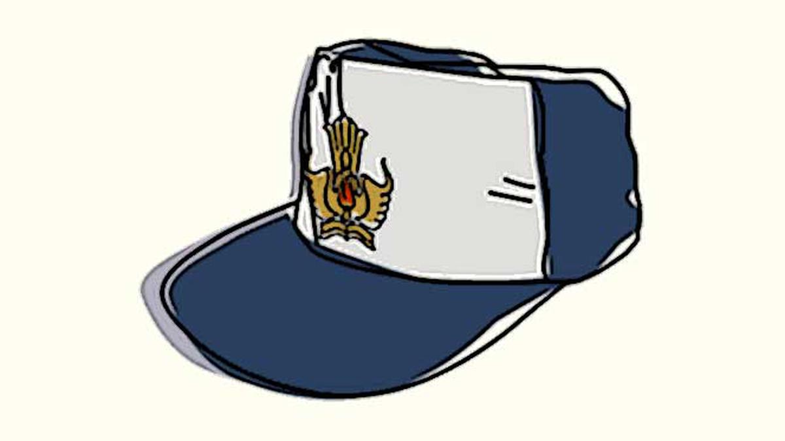
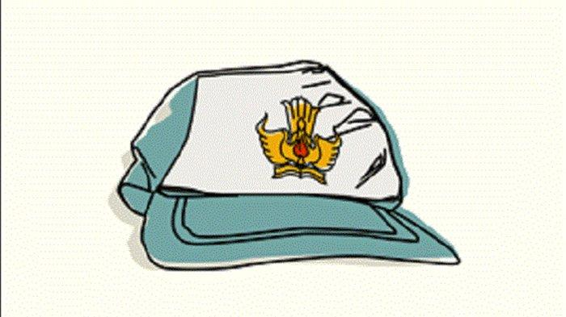

Education

Sekolah Dasar
Saya bersekolah dasar di SDN Cisarongge, Kec.Cihampelas Kab. Bandung Barat - Jawa Barat

Sekolah Menengah Pertama
Saya Bersekolah di SMP Darul Falah, Kec.Cihampelas Kab. Bandung Barat - Jawa Barat
